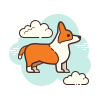

Viewing Party
Description: To create a series of functions, which will modify the data, and implement features like adding and removing things between different lists. Other features include creating recommendations!
- Conditional logic
- Lists
- Dictionaries
- Nested loops
- Nested data structures
AdaGrams
Description: To create Adagrams, a game in which a player is given a random set of letters and must make an anagram using those letters. Each submitted word will score points.
- Following directions and reading comprehension
- Reading tests
- Using git to maintain code
- Manipulating and processing data in lists and strings
- Practicing pair-programming techniques
Swap Meet
Description: Envision an app where vendors can swap items between different inventories. Given some features that the vendors want, create a set of classes. To create many class definitions, their attributes and instance methods, and some other cool features. Vendors will be able to swap their top item and swap items by category!
- Creating classes.Importing modules
- Working with attributes that are lists of instances
- Implementing instance methods that interact with other instances and objects
- Overriding methods from superclasses and Object
Solar System API
Description: To build a Solar System API. This API will store information about different planets. Focus on creating RESTful endpoints for CRUD operations.
- Improve our understand of Flask & SQL Alchemy with repetition
- Discuss and explain Flask code together in pair or group programming
- Improve skill at working with others.
Task List API
Description: To make a web API to organize our tasks, we'll be able to create, read, update, and delete tasks as long as we have access to the Internet and our API is running! Do some interesting features with the tasks including: sorting tasks, marking them as complete, geting feedback about our task list through Slack, organizing tasks with goals
- Creating models
- Creating conventional RESTful CRUD routes for a model
- Reading query parameters to create custom behavior
- Create unconventional routes for custom behavior
- making requests in Python, to call an API inside of an API. Creating environment variables
- Creating a one-to-many relationship between two models
Library Management
Description: To build a library management system keeps track of the books present in the library. Other functions include adding a book, deleting a book, viewing a book and return a book.
- Importing the necessary modules
- Connecting to the MySql server
- Creating conventional RESTful CRUD routes for a model
- Reading query parameters to create custom behavior
- Making requests in Python and implement functions